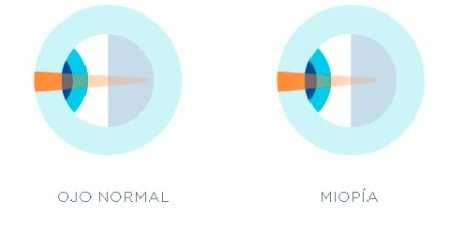

Volver
Miopia
Descripcion general
La miopía es un trastorno común de la visión en el que
puedes ver con claridad los objetos que están cerca tuyo,
pero ver borrosos los objetos alejados. Se produce cuando
la forma del ojo hace que los rayos de luz se inclinen (refracten)
incorrectamente, lo que enfoca las imágenes delante de la retina en lugar
de sobre la retina.
La miopía puede manifestarse gradualmente o de forma rápida,
y con frecuencia empeora durante la niñez y la adolescencia.
La miopía suele heredarse.

Un examen ocular básico puede confirmar un diagnóstico de miopía. Puedes compensar la visión borrosa con anteojos, lentes de contacto o cirugía refractiva.
Con frecuencia, la miopía se detecta por primera vez durante la infancia y, por lo general, se diagnostica entre los primeros años
de la escuela primaria y la adolescencia. Un niño con miopía puede manifestar lo siguiente:
Sintomas
Los síntomas de la miopía pueden incluir los siguientes:
- Visión borrosa cuando se observan objetos alejados
- Necesidad de entrecerrar los párpados para ver con claridad
- Dolores de cabeza causados por fatiga ocular
- Dificultad para ver al conducir un vehículo, especialmente por la noche (miopía nocturna)
Causas
Además de los factores que tienen que ver con la propia estructura del sistema
visual o de alguno de sus elementos, como la córnea, y que hemos señalado con anterioridad, la miopía puede estar causada por otras circunstancias:
- Genéticas.En muchos casos, la aparición de la miopía tiene que ver con
factores hereditarios. Es decir, que el hijo de uno o ambos padres miopes es muy
probable que también lo sea. Sin embargo, es imposible predecir la aparición de este problema refractivo estudiando únicamente los antecedentes familiares.
- Patológicas. Algunas enfermedades pueden producir miopía de forma temporal o permanente. Es el caso de la diabetes, el queratocono o algunos tipos de cataratas.
-
Ambientales. Según algunos estudios, trabajar con
dispositivos electrónicos con una luz ambiental no adecuada o durante demasiado tiempo o desarrollar pocas actividades al aire libre (especialmente durante la infancia) pueden ser factores que estén involucrados con el proceso de aparición de la miopía.
-
Tóxicas. El consumo de ciertas sustancias puede provocar alteraciones temporales o definitivas del proceso de la visión.
¿Qué tipos de miopía existen?
Generalmente se suelen distinguir dos tipos de miopía:
-
Miopía simple. Se presenta en pacientes que tienen menos
de 6 dioptrías La miopía simple es el tipo más frecuente, es normal que se estabilice alrededor de los 18 ó 20 años y no se puede prevenir, aunque sí debe ser detectada a tiempo a través de un examen oftalmológico completo y corregida mediante el uso de gafas, lentes de contacto o mediante diferentes tipos de técnicas quirúrgicas.
- Miopía magna, alta miopía o patológica. Cuando la graduación del paciente supera las 6 dioptrías. La miopía magna suele estar producida por una elongación excesiva del globo ocular. En algunos casos, este tipo de miopía puede derivar en cambios degenerativos asociados a la elongación excesiva del ojo, especialmente a nivel de la retina, comprometiendo seriamente la visión de la persona que la padece. Las personas que padecen alta miopía deben realizarse revisiones periódicas para conocer el estado de su fondo de ojo.